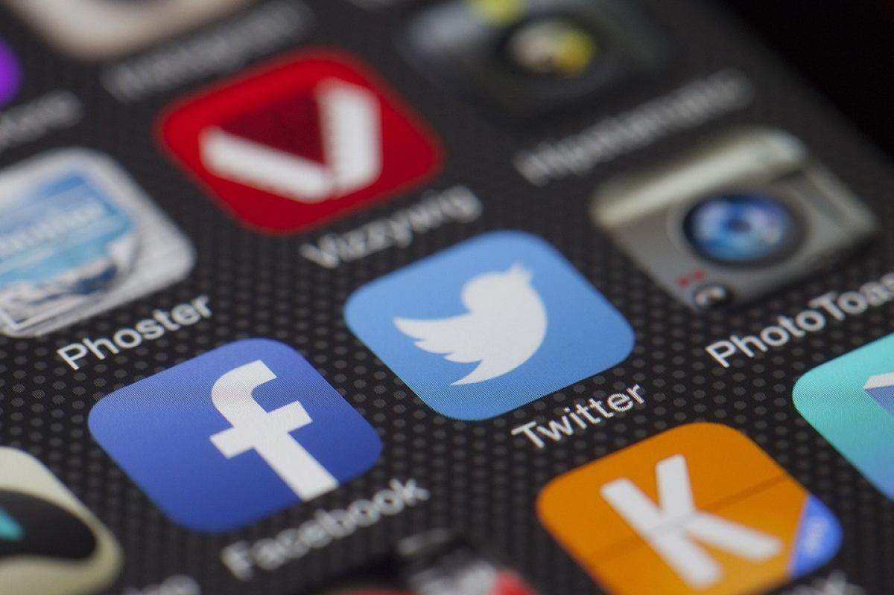
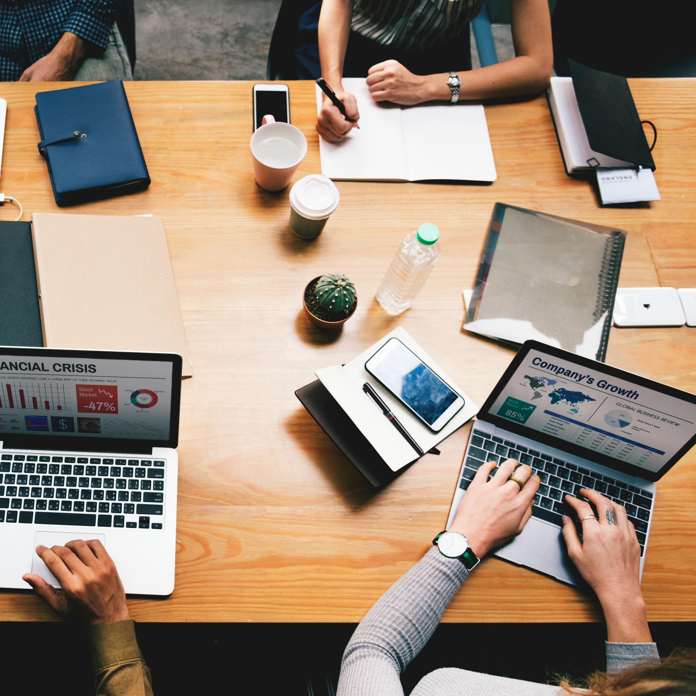

Internet Freedom and rights.
The concept of free inernet.
The internet is an incredible invention; open source, decentralised, community-led and a source of knowledge, information, and power, it is used by 51% of the world’s population. But at the moment, it comes at a cost. In order to access the World Wide Web, you need not only a connection, but a device on which to connect, meaning that almost half of the world is not able to get connected. While in Malta steps are being taken to provide free WiFi in public places all over the island, should the internet be free globally? We believe so… and these are 5 reasons why.
1. Knowledge

The internet provides infinite levels of knowledge to anyone who seeks it. No longer constrained to the information provided by the books that we have access to, we can now find the answer to anything in under one second by using the internet. Restricting the knowledge of the populace based on their access to books, libraries, or financial means is unfair; those without the means will struggle to educate themselves. By making the internet free of charge, we are levelling the playing field and giving everyone the opportunity to access what ever knowledge they want, whenever they want it.
2. Connectivity
One of the greatest powers of the internet is that of connectivity. This allows people from all over the world to engage in vibrant online communities, to connect with others from every corner of the world and to communicate with individuals that they would not otherwise have chance to speak with. Communication with other citizens of the world should not be reliant on being able to afford an internet connection, and everyone should have the ability to make friends, build networks, and even work with others regardless of financial status or geographical boundaries.
3. Freedom

The internet brings freedom to its users in many ways; it gives people the freedom to learn what they want, to speak with whom they choose, to air their opinions, and even to work with people they have never, and will never meet. This level of freedom is available to anyone who can access the internet, so ensuring that everyone can access the internet without charge means that the freedom it brings is accessible to all.
4. Choice
The internet gives users access to a global marketplace of unparalleled scope. Individuals can shop around for the best product prices, the best salaries, the best services, and even the best employees. Free internet gives people the power to choose what they spend their money on, as well as ensuring they get the best deal or the best value that they possibly can. Free internet does not withhold these benefits from people based on whether they can afford a connection; instead it offers a true free market to every person in every country in the world.
5. People Power
The internet is well-known as a platform where people can discuss issues, politics, society, economy, and other matters, as well as giving a platform for change-makers to flourish. If the internet is free, everyone in the world has an equal opportunity to have their voice heard, to educate themselves each other and to come together to fight for change, where change is needed. Free internet will also facilitate the sharing and development of ideas that range from technology to health, art to finance, and politics to sociology- all of these things are core parts of a functioning society and the internet is the perfect platform to allow people from all walks of life to meet and discuss in a virtual environment.
Privacy and Protecting
End user development has grown in strength during the last decades. The advantages and disadvantages of this phenomenon have been debated over the years, but not extensively from an information security culture point of view. We therefore investigate information security design decisions made by an end user during an end user development project. The study is interpretative and the analysis is structured using the concept of inscriptions. Our findings show that end user development results in inscriptions that may induce security risks that organizations are unaware of. We conclude that it is a) important to include end user development as a key issue for information security management, b) to include end user developers as an important group for the development of a security-aware culture, and c) to address information security aspects in end user development policies.
Right to internet
The right to internet espouses two facets of the right to internet access and the right to speak and express oneself over the internet, which are the positive negative and forms respectively. There is a host of conceptual and theoretical issues that underpin the right to internet. The pertinent question that arises here is: what is the locus of the right to internet within our legal system? Whether it is a right held only by citizens only or by people universally? If it is taken in the former sense, then it suggests the right is merely statutory and if understood in the latter, a kind of human right. There is the question as to the nature of the right: natural or fundamental.
Right to internet access
There are broadly two ideas that make a case for the recognition of the right to meaningful access which has received much attention from scholars. The first being that the right to meaningful internet access can be brought in place if the State chooses to frame regulations with regard to market conditions and distribution of resources with a view to enable equitable access. This view has roots in Article 19 and 21 of the Constitution. The second advocates that the right to internet be recognized by the State in the form of a statutory, sui generis right to internet access from existing international human rights obligations.